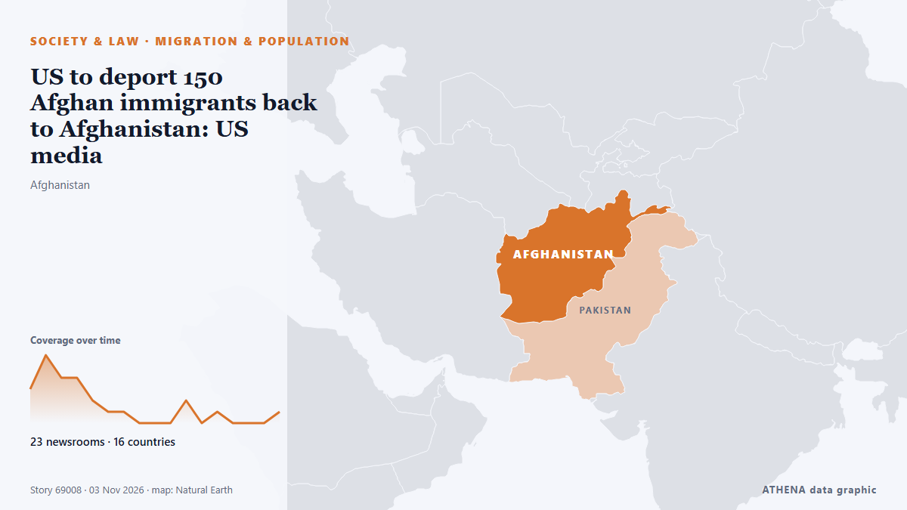

Migration und Bevölkerung
GesponsertPräsentiert von  Cybernetics and Artificial Intelligence Lab Welcome to the Cybernetics and Artificial Intelligence Laboratory, established at the Department of Business Administration of the National and Kapodistrian University of Athens. The lab is headed by Professor Dimitrios Thomakos. The lab aims to do research that can be published in top venues. Our research uses tools and methods of Artificial Intelligence, and lies in the following areas: - Forecasting - Decision making - Cyber security - Finance We are always looking forward to collaborating with exceptional students!
Cybernetics and Artificial Intelligence Lab Welcome to the Cybernetics and Artificial Intelligence Laboratory, established at the Department of Business Administration of the National and Kapodistrian University of Athens. The lab is headed by Professor Dimitrios Thomakos. The lab aims to do research that can be published in top venues. Our research uses tools and methods of Artificial Intelligence, and lies in the following areas: - Forecasting - Decision making - Cyber security - Finance We are always looking forward to collaborating with exceptional students!
| 22. Okt. | 0 |
|---|---|
| 23. Okt. | 0 |
| 24. Okt. | 0 |
| 25. Okt. | 0 |
| 26. Okt. | 0 |
| 27. Okt. | 0 |
| 28. Okt. | 0 |
| 29. Okt. | 0 |
| 30. Okt. | 2 |
| 31. Okt. | 1 |
| 1. Nov. | 7 |
| 2. Nov. | 9 |
| 3. Nov. | 5 |
| 4. Nov. | 0 |
Schlagzeilen werden auf Englisch angezeigt, wie veröffentlicht.

US to deport 150 Afghan immigrants back to Afghanistan: US media
Trump administration plans to deport more than 150 Afghans via Pakistan, despite warnings from advocacy groups that they could face danger under Taliban rule. von The New Arab
ASEAN Observer Team visits Boeung Trakuon border area
The ASEAN Observer Team in Cambodia visited the Boeung Trakuon border area in Banteay Meanchey province on Monday to observe, verify, and report on the situation along the shared border with Thailand… von Khmer Times
Tiny trackers on monarch butterflies to reveal secrets of 3,000-mile migration
The butterflies undertake an amazing journey from the northern US and Canada to Mexico to hibernate. von The Irish News (Belfast)
South Darfur takes precautions against Ebola
The health ministry in Sudan’s South Darfur State last week concluded a training workshop for. von Radio Tamazuj
British adventurer Karl Bushby ends epic 28-year trek across jungles, frozen sea
Bushby began his adventure when he was 29, after his marriage broke down. von The Straits Times
UK migrants face 10-year wait for permanent settlement under new rules
The SNP has accused Labour of "dancing to Nigel Farage's tune" and warned that its immigration reforms could damage Scotland's economy, despite a major U-turn over plans to make migrant care workers… von The Herald (Scotland)
Mamdani threatens ICE with legal action over use of New York parking lots
Letter from mayor tells federal agents to stay out of city-owned facilities for immigration operations Mayor Zohran Mamdani has threatened to take legal action against Immigration and Customs… von The Guardian
U.N. releases S. Korea's letter decrying N.K. mine blasts, defending border warning shots
NEW YORK/SEOUL, Nov. 3 (Yonhap) -- The United Nations has released a letter that... von Yonhap (English)
As peacekeepers leave Western Sahara, refugees yearn to end a half-century wait
TINDOUF, Algeria, Nov 2 - At 51, Binina Mohamed is as old as the conflict that drove her from the Western Sahara region into a refugee camp in southern Algeria, where she has spent her life among… von The Straits Times
Taliban government voices ‘serious concern’ over US Afghan deportation plans
More than 150 Afghans in the US face deportation to Afghanistan via Pakistan, including relatives of those who assisted US forces before their withdrawal in 2021. von Free Malaysia Today
Greece Faces Fewer Than 1.4 Million Births Over Next 20 Years
A demographic study projects fewer than 1.4 million births in Greece between 2027 and 2046, down from 1.8 million in the previous two decades, as declining fertility and a shrinking population of… von to vima
Home Secretary to announce immigration rules overhaul on Monday
Shadow home secretary Chris Philp criticised an expected dilution of Shabana Mahmood’s plans to tighten immigration rules. von The Irish News (Belfast)
An ICE officer is charged with assault for striking a man with a car in Houston
The officer, Mario Alberto Morales, was driving an unmarked SUV on Oct. von PBS NewsHour
Seven migrants die in seas off Spain's Canary Islands
MADRID, Nov 2 - At least seven migrants died off Spain's Canary Islands while more than 380 people were rescued on Monday, the country's maritime rescue services said. von The Straits Times
Andy Burnham new plan for state pensioners born before 1964
Details were confirmed by Chancellor John Healey at the Budget. von Birmingham Mail
Government has an important reminder for everyone coming to India from abroad
The Bureau of Immigration emphasizes that the Air Suvidha Self-Declaration Form is essential for all air passengers. von Times of India
Latvia reports brief airspace intrusion near Russia, Belarus borders
As Ukraine attacks Russian Baltic Sea oil shipping ports, some of its drones have missed their targets, triggering security warnings in neighbouring countries. von Free Malaysia Today
Netherlands coast guard rescues 38 people adrift in a rubber boat
Dozens of people adrift at sea in a rubber boat have been rescued off the coast of the southern Netherlands. von ABC News (International)
Headline: Firebomb Attack Targets Thanos Plevris’ Political Office in Athens
Thanos Plevris' political office in Athens' Kolonaki district was targeted in an arson attack at approximately 2:15 am on Sunday. von Greek City Times